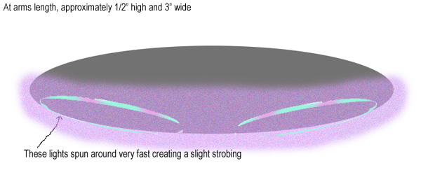

SUMMARY:
A resident of West Chester, Ohio reports a dramatic UFO sightingnear his residence that was accompanied by a local power failure. The claimant sought to file his report to the National UFO Reporting Center. Contact info for the report was passed along by NUFORC's Peter Davenportfor further investigation. (See below for original NUFORC report)
After receiving the contact info I called Mr. Greg M. (name on file)and asked Greg for details of the sighting. He told me the essentialdetails and informed me that he had tried to be thorough in his accountto NUFORC.
Greg says he was awakened around 2:30 AM by the sound of his UPSsystem beeping to let him know the power was out in his home. Greginformed me that a UPS system is an uninterruptible power supply. Basicallya battery backup to his computer. It can run his entire system with noutility power for about 2 hours. When its activated it signals analarm to notify him that the power has been interrupted to the house sohe can safely shut down the computer.
When Greg heard the beeping he thought that maybe a storm was comingso he got out of bed and went downstairs to unplug the TV and stereo. Thatis when he noticed a strange smell emanating from the family room. It smelledof a high concentration of ozone. His lontic breeze smelled similar whencleaning it, but the device was unplugged and had not been used for severaldays. Greg grabbed some candles and was getting ready to go back upstairswhen he happened to gaze out the back window and saw an object in the sky.
The witness claims that an oval or disk shaped aerial object wasvisually observed. He stressed that the object was 'not quite exactly'oval or disc shaped. When he first observed the object he believedit held stationary but after a few minutes it began to wobble. Greglikened the wobble to a left to right motion but not like a pendulum swinging.
Greg estimated the object was around 1/4 to 3/4 miles distance fromhis location and at an elevation of 600 to 1,000 feet up. He saidthe shape could be clearly seen and, if it were closer, could almost becompared to the size of a bus. The bottom half of the object couldbe seen clearly; being comprised of luminous blue/violet light. Oneach end of the object were two lights of aqua blue color. These lightswere reportedly spinning very fast and according to the witness, appearedto strobe or pulsate.
Greg stepped outside to get a better look at the object. Upon enteringthe patio the witness say the silence was so complete that it felt likehe had walked into a sound proof room. There was not a sound of anykind. Not insects, cars, nothing. Not even a breeze could befelt. It was a very eerie feeling.

Going back in, the witness notices that his cats were nowhere tobe seen. They are usually with him when he is up. I asked the witness ifhe had watched the object depart. Greg claims the he does not rememberhow it left. He states that he remembers standing out back gawkingat the object in the stale silence.
The witness says he was sure he would have stood there as long asit took for this object to leave or do something, but he honestly justremember the parts leading up to seeing it. He watched it maybe 15-20 minutesand then went to bed. He says he doesn't remember going back to bed. He would have stayed up or called someone or done something besides dismissingit. He told me that he did not understand his actions regarding this.
Upon awakening the next morning the witness says that a candle containedin glass he had been using during the power outage and had left burninghad exploded. He detailed how wax had been projected on the walls afterthe explosion, and theorized that the glass container had been defective.He said he does not know why he did not awaken from the sound of the explodingcandle.
Checking his UPS systems backup which records data during the poweroutage he noticed that the electricity had been off for 5 hours and 11minutes. Greg states that this was impossible because he rememberswaking up with plenty of time to get to work. His printout is asfollows:Outage event at 2:23:43s Eastern, duration of outage was 5 hours11 minutes 03 seconds. So the power came back on at approx. 7:34AM. Greg sent me the full printout from his computer system which he hastranslated for easier reading. This printout is on file.
FURTHER INVESTIGATIONS:
In attempt to obtain more regarding the claim of a UFO sighting onJune 2, 2003, near West Chester, Ohio, I placed a telephone call to theButler County, Ohio Sheriff's Department, the receptionist offered oneitem from her log that may or may not be of relevance. At approx.1:05 AM on June 2nd a house security system had been tripped at a location3 miles from the claimants home. No explanation was given for thehome security system activation. I also contacted the West ChesterPolice Department. The receptionist there stated no reports had beencalled in about a UFO on that date.
CINERGY INQUIRES:
Inquires were also made with CINERGY, the facility providing powerto a large portion of Cincinnati and Southern Ohio. I sought to confirmthe power failure reported by the claimant. I contacted the OperationsPlanning Engineer for CINERGY. After pulling up the records for the areaand address given he reported that no power outage had occurred in WestChester on that date.
ASSESSMENT OF SITUATION:
I feel that Greg is an intelligent and coherent individual. Early on in our conversations he advised me that the power was out on hisstreet but later changed his story to say power was out only inhis house. I do not know why he changed his story. I believe hisstory about seeing an unidentified flying object and will do so until circumstancessurrounding the case change to the contrary.
NUFORC REPORT:
Occurred : 6/2/2003 03:00 (Entered as : 06/02/2003 03:00)
Reported: 7/2/2003 6:03:11 PM 18:03
Posted: 7/16/2003
Location: West Chester, OH
Shape: Oval
Duration:15-20 minutes
Oval craft with two strobing ovals that seemed to be propulsion- bottom of
craft was saturated in a deep blue light
I was woken up this morning at 2:30AM by the sound of my UPS systembeeping to let me know the power was out in my house. Cable, wireless phoneand the hardline telephone was out as well because I tried to dial in tocheck email and see if there was a bad storm coming. I went downstairsto unplug the TV and stereo because I know they are usually at risk whena surge of power hits when power is restored. I also grabbed some candles.When I walked in the family room - I smelled a VERY HIGH concentrationof ozone, similar to my Ionic Breeze when it's turned on after being cleanedbut it was not on and had not been on all day. Looking out the back windowI saw it. The object was probably 30-40deg declination directly to my west.When I finally stepped outside, there was no storm that knocked out thepower - actually, there was not a single sound at all - not even cricketsor passing cars. The vehicle was probably 300-600 feet up (but hard tosay exactly) and moved erratically but seemed to be hovering. It wouldwobble to the left and right and below it were two independent blue-ultra/violet-bluestrobing halos that made the bottom of the vessel glow in this eerie blue.I was petrified watching it in awe and did not get a picture of it butI certainly studied it enough to accurately describe/draw it.
Later this morning when I woke up again I had wondered if it wassome kind of lucid dream but alas, there on the floor in the family roomis the candle wax that I spilled while I was mesmerized by this encounter.
Filed 8/25/03
Donnie Blessing
Southern Ohio Section Director MUFON